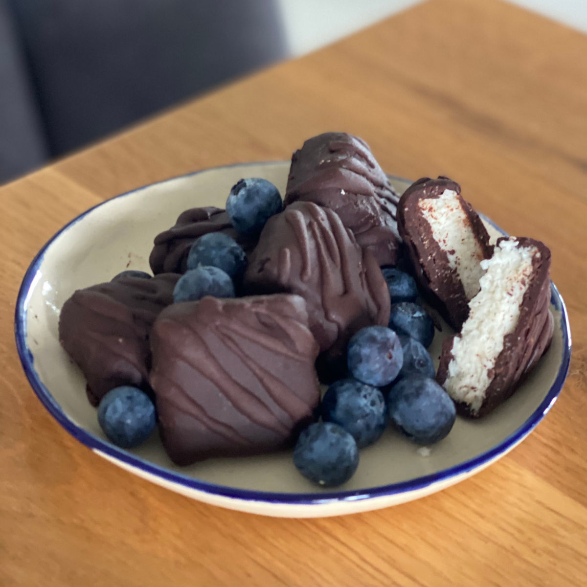
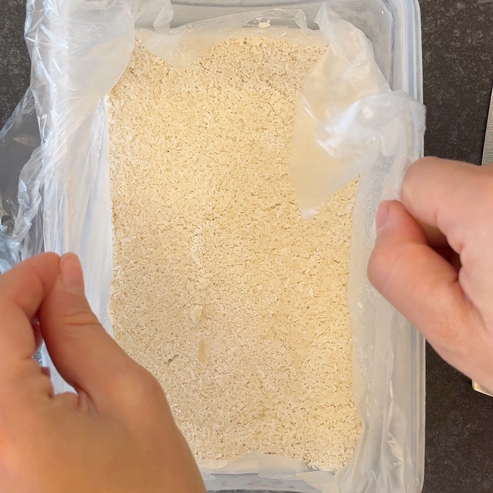
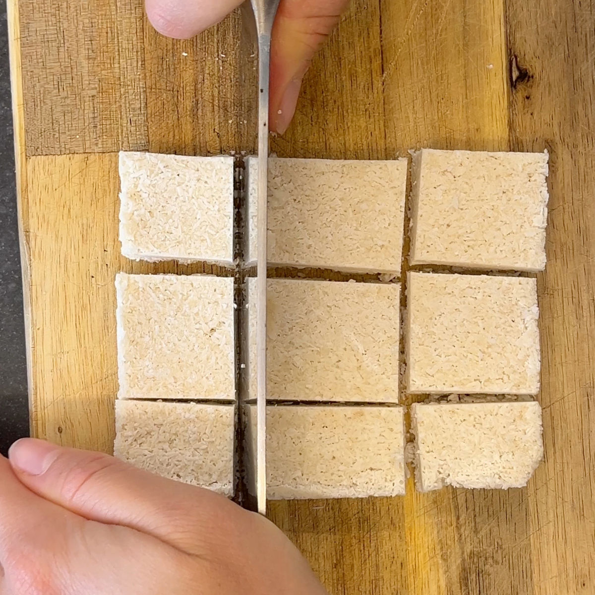
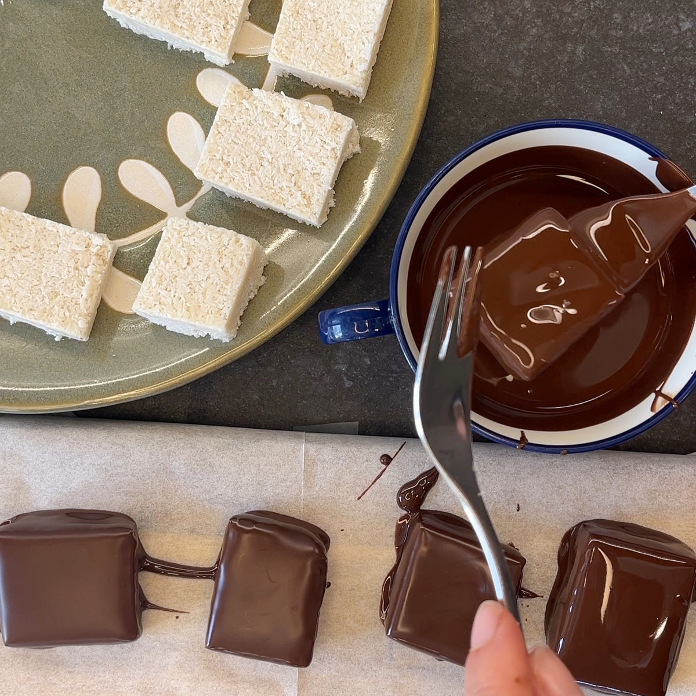
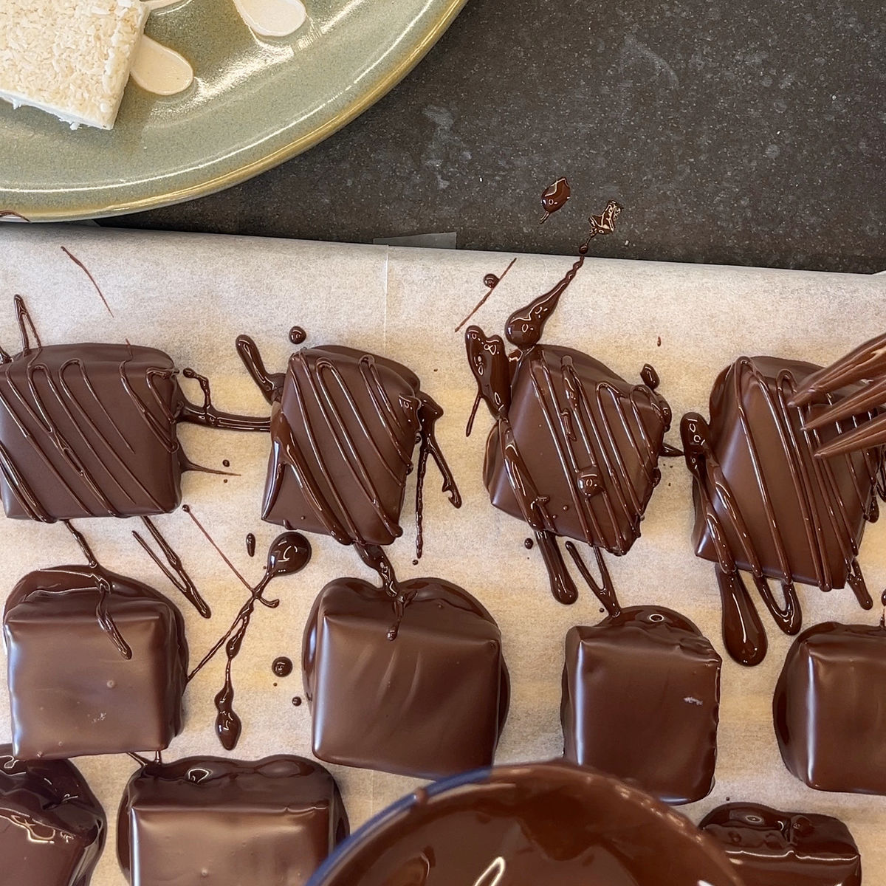

באונטי קוקוס בגרסה הבריאה
עודכן: 22 באפר׳
טבלת ערכים תזונתיים בקירוב :
שימו לב שהערכים משתנים כתלות בממתיק, טבלה זו היא עבור מתכון עם סוויטאנגו, נוזל קוקוס, חמאת שקדים ושוקלד 90%
| ערכים | קוביה (40 גרם ) אם מחלקים ל8 קוביות | 100 גרם |
|---|---|---|
| קלוריות | 226.6 | 566.5 |
| פחמימות | 3.2 | 8 |
| חלבונים | 3.52 | 8.8 |

מתכון:
כמות: שמונה קוביות תלוי גודל התבנית והקוביות שבחרתם
מרכיבים:
100 גרם קוקוס טחון
1.5 כפות (22 גרם) סוויטאנגו / 1.5 כפות (30 גרם) דבש (שימו לב: דבש אינו מתאים לסוכרתיים ולקיטוגנים)
4 כפות (50 גרם) קרם / נוזל קוקוס - במידה ואין ניתן להחליף ב4 כפות של שמנת מתוקה
2 כפות (30 גרם) חמאת שקדים - במידה ואין ניתן להחליף ב2 כפות שמן קוקוס אך פחות מומלץ
1 כפית תמצית וניל
100 גרם שוקולד 90% לציפוי
2 כפיות שמן קוקוס לציפוי
הוראות הכנה:
לוקחים את קרם הקוקוס ומערבבים אותו יחד עם חמאת השקדים, תמצית הוניל והממתיק.
הוסיפו את הקוקוס הטחון לתערובת.
לוקחים קופסה או תבנית ומרפדים ב שקית אוכל, ניילון נצמד או נייר אפייה.
שופכים את הבלילה לתבנית ומהדקים את הבלילה לתבנית (דוחסים).
מקפיאים לפחות שעה וחצי במקפיא.
ממיסים את השוקולד עם כפית שמן הקוקוס.
מוצאים את הבלילה וחותכים לקוביות.
מצפים את הקוביות בשוקולד המומס.
שומרים במקרר.
סרטון מתהליך ההכנה:
לינק לסרטון קצר
תמונות מתהליך ההכנה:

דוגמה לצורת הקפאה

חיתוך לקוביות

טבילה בשוקולד

קישוט באמצעות מזלג